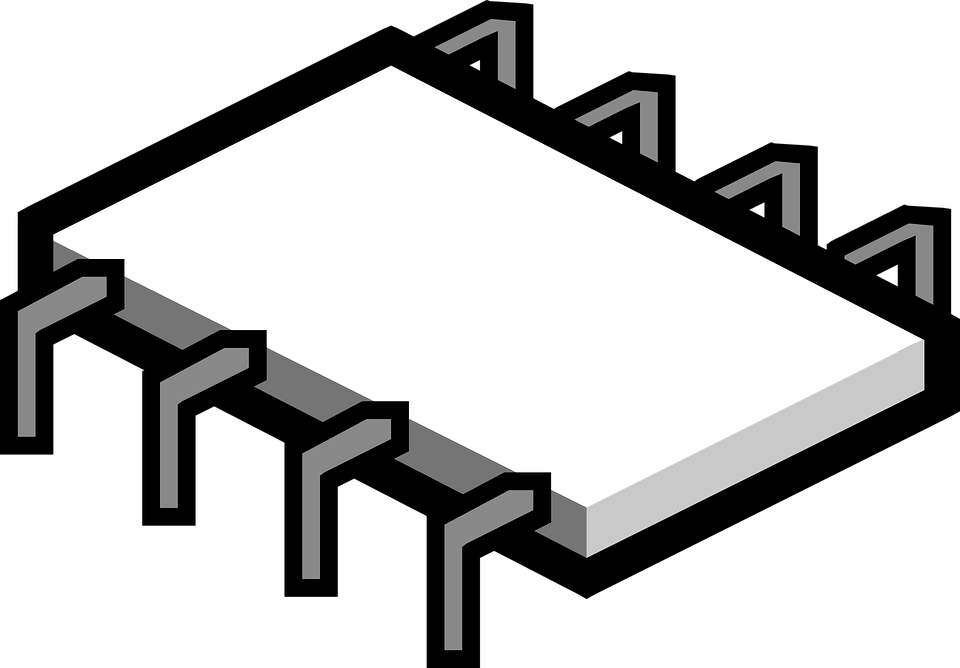

James K Reed
Computer Engineering Student
Experienced Software Engineer


Software Engineer Intern at Facebook
- Developing a real-time translation memory (TM) system for identifying semantically similar phrases in a corpus of already-translated strings.
- Utilizing word embeddings to encode phrases into a latent semantic vector space for performant reasoning about semantic relations.
- Productionizing the similarity matching system within a low-latency per-request envelope.

Embedded Systems Design Captone
- Utilized a feedforward neural network regression model to predict indoor location in 2-space of a rover given a vector of WiFi signal strength (RSSI) measurement values.
- Developed embedded systems firmware for controlling the rover and communication throughout the system via a serial-over-TCP-over-WiFi system.
- Developed an Interface Description Language (IDL) compiler to generate serialization code for multiple platforms.

Software Engineering Intern at Google
- Developed machine learning classifiers for use within a knowledge representation system for information automatically learned from a text corpus.
- Implemented the trained models within the context of large-scale, distributed systems.
Software Engineering Intern at Google
- Developed a mechanism by which distributed computation hosts outside of Google's network can report useful debug information.
- Developed an internal server which collects, aggregates, and displays debug information from the external hosts.

Engineering Intern at Qualcomm
- Developed Linux kernel integration for Snapdragon-specific hardware-enabled random number generation.
- Added Linux driver support for multi-core hardware cryptography modules present on several SoC product lines.
Engineering Intern at Qualcomm
- Developed software tools and infrastructure to assist in the debugging and testing of the Microsoft Windows operating system running on Qualcomm Snapdragon System-On-Chips (SOCs).